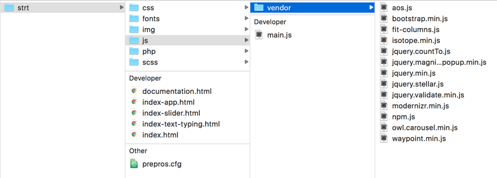
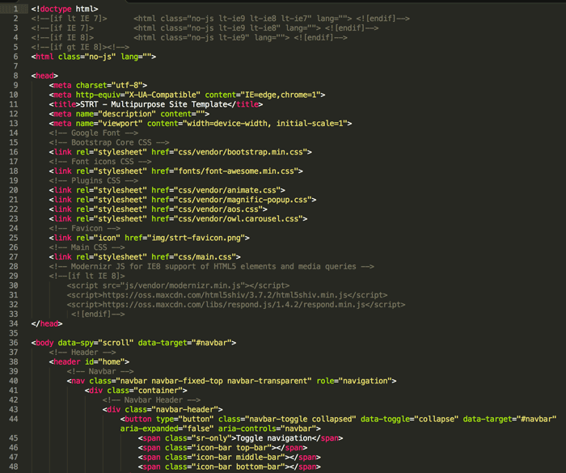

Created 18 September 2016
Updated 18 September 2016
By SlariStudio
Support: STRT Support
All files and folders are well structured and organized.
 There are four different layout of hero in STRT
Above is the screenshot of the hero static html from index.html file.
You can change the image with adjust the image source in background-image property in main.scss.
Above is the screenshot of the hero slideshow html from index-slider.html file. You can change the image with adjust the image source below .item-slider.
Above is the screenshot of the hero text typing html from index-text-typing.html file. You can change the text content with adjust code below .word-typing.
Above is the screenshot of the hero app layout html from index-app.html file. You can change the text content with adjust code below .word-typing.
To change the background image of parallax content like Counter Section, you need to find the following section on main.scss and change the background image.
If you don't want to have parallax effect on the image, you can easily remove class bg-fixed in the html file
STRT used class="container" from Bootstrap to wrap content and house the grid system. Therefore it has maximum width of 12 columns (1170px width on desktop screen). To make a full width column you need to change class container into class="container-full".
There is counter section on STRT that has 4 item to count up. You can change data-from and data-to on counter-item section.
data-from means what number that you start counting and data-to means what number it will stop counting